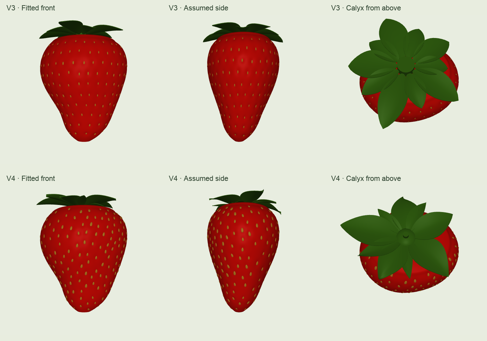
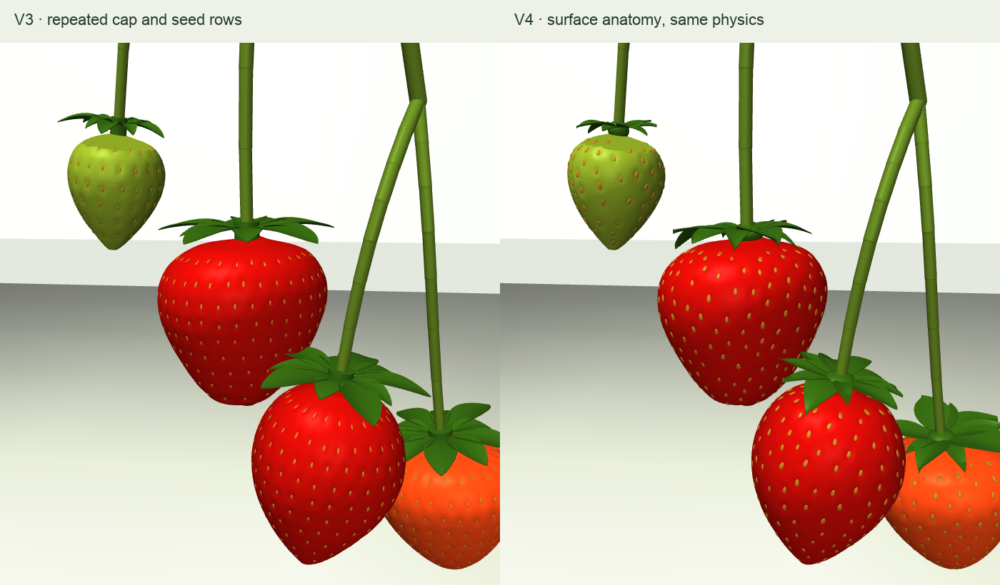

The same measured shape, better surface anatomy.
The photographed outlines remain intact. This pass rebuilds the cap and seed-bearing surface. Compare revisions from the same camera, inspect the top, and follow the changes back into the complete plant.
Loading meshes…
The V3 collision shapes and plant motion are preserved. New details affect appearance only; the flexible calyx and bruising physics are still unresolved.
What changed, and why
Achenes on the finished surface
The old shape deformation stretched the seeds too. The new surface places small ovoid achenes using final surface area and local spacing, then aligns each one to its own surface normal. Seed size stays independent of the fruit's outline.
Placement uses a repeatable geometric sampler. It approximates observed spacing; it does not simulate flower development.
An attached, folded cap
Broad sepals alternate with narrower epicalyx parts. Each has its own width, crease and tip curvature. Basal tissue joins the cap to the existing stalk attachment.
The five-plus-five arrangement is one configurable botanical prior. Cultivated fruit can have different counts. Calyx shape is not fitted to the fruit photograph at left, where the calyx was removed.
Same specimen, camera and lighting

Real anatomy references
These are different real fruit, not photographs of the simulated specimen. Use them to inspect structures and variation; they cannot establish the model's hidden depth or exact dimensions.


Photographs and anatomy explanation · Flora of China: sepal and achene forms · Outline research and parametric shape family
Back in the complete plant
Same settled pose, fruit envelopes, mass, centers of mass, inertia and plant dynamics. Exact compiled checks and an identical 100-step simulation confirm that the existing V3 contact recordings remain applicable.

Evidence, reproduction and remaining uncertainty
Method and reproduction · Geometry parameters · Achene sites and calyx parameters · Physical equivalence check · Outline regression check · Canonical builder check
Achene spacing, calyx curvature and display colors are explicit priors. Hidden depth still needs same-fruit multiple views. Skin dimples and new calyx geometry are visual only. Stalk mechanics retain the prior uncalibrated model. No cutting, catching, bruising or PPO training is claimed here.